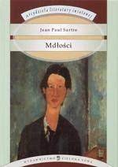

Mdłości

pierwsza powieść Sartre’a z 1938 roku. Powstała pod wpływem pobytu w Niemczech w latach 1933–1934 i zapoznania się z ideami Husserla i Heideggera. Autor chciał zatytułować ją Melancholia I, nawiązując do ryciny Albrechta Dürera, jednak w Gallimardzie postanowiono inaczej.
Miejscem akcji jest Bouville, fikcyjne nadmorskie miasto, przypominające Hawr, gdzie Sartre uczył filozofii w liceum, zanim poświęcił się pisarstwu.
Bohater, pierwszoosobowy narrator, prowadzący dziennik, to Antoine Roquentin, samotny kawaler w wieku mniej więcej trzydziestu trzech lat. Nie utrzymuje kontaktów z rodziną. Pracuje wytrwale nad dziełem o życiu fikcyjnego markiza de Rollebon, polityka z końca XVIII wieku. Jest rentierem, odkąd porzucił posadę w Indochinach, gdyż znużyły go podróże i przygoda. Lubi samotność, jednak też słucha rozmów innych i przygląda się ich działaniom.
W prowincjonalnym francuskim mieście, gdzie przebywa od trzech lat, zna tylko kilka osób: pracowników kawiarni i restauracji oraz „Samouka”. Spotyka się z właścicielką kawiarni Françoise, ale prawie nie rozmawiają, chodzi wyłącznie o seks. Ogier P., samouk, urzędnik, niemal przyjaciel głównego bohatera, to nieokreślona postać, dość absurdalna. Studiuje on w kolejności alfabetycznej książki w miejskiej bibliotece, doskonaląc się w zdyscyplinowany sposób przez setki godzin, ale nie wiadomo, w jakim celu. Jest socjalistą, humanistą (przeciwieństwem unikającego zobowiązań indywidualisty Roquentina), przy tym gejem, i dostaje w końcu zakaz korzystania z biblioteki, kiedy zaczepia tam, głaszcze nastoletniego chłopca.
W zimie 1932 roku Roquentin ulega tytułowym „mdłościom”, czyli nudzie i brakowi zainteresowania ludźmi, z którymi się styka, fizycznym otoczeniem, markizem, którego życie bada. Nie ma o sobie zbyt wysokiego zdania, uważa, że ma brzydką twarz bez wyrazu. Zaczyna nawet wątpić, czy w ogóle istnieje, czy nie jest wytworem wyobraźni. Czuje do siebie głęboką odrazę. Stopniowo uświadamia sobie własne istnienie, co zmienia całą jego istotę. Prosi o przyjazd eks-narzeczoną i kochankę Anny, Angielkę, aktorkę koło trzydziestki, utrzymywaną przez nowego mężczyznę. Okazuje się, że ich związku nie można już odbudować, ponieważ ona się bardzo zmieniła. Po wyjeździe Anny zostaje naprawdę całkiem sam i nie ma dla kogo i dla czego żyć. Z „mdłości” może go wyrwać tylko wyobraźnia, a napisanie tej powieści może pomogło mu pogodzić się z własnym istnieniem.